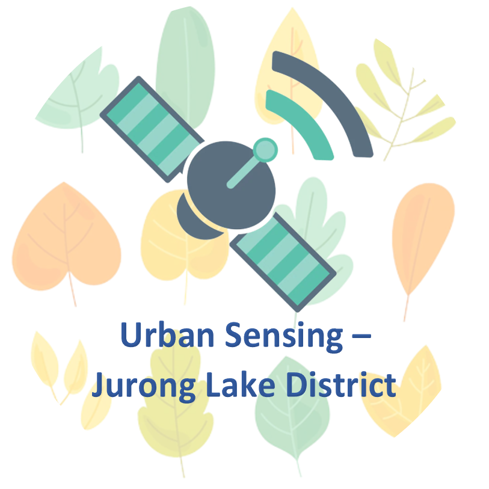
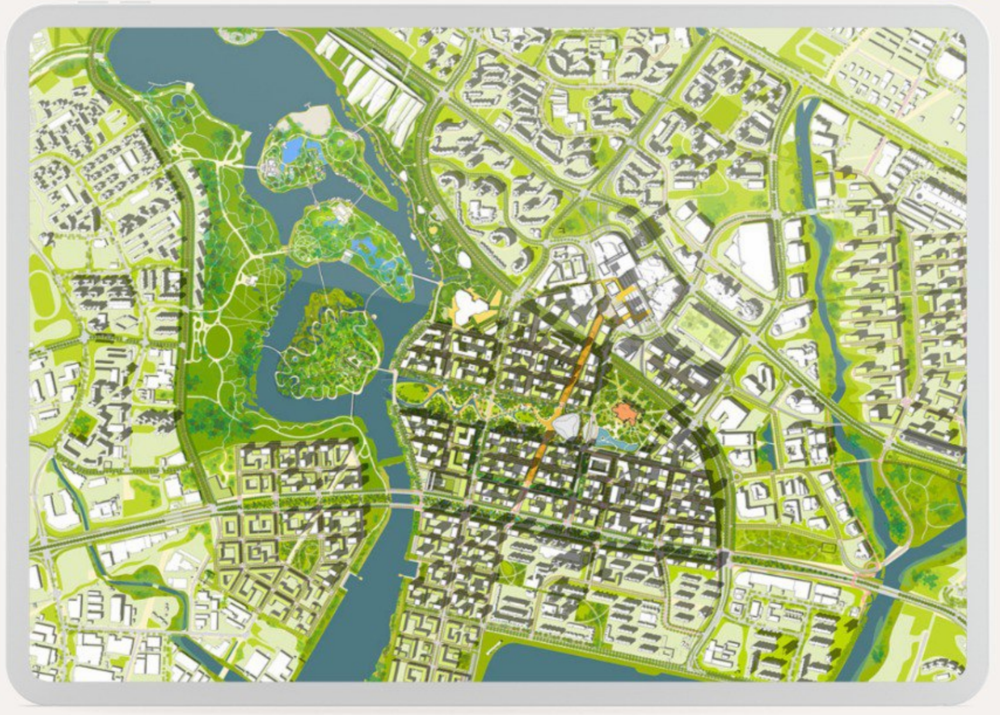

Urban Sensing With Satellites - Jurong Lake District

Overview
Urban Sensing With Satellites - Jurong Lake District is a project under the module SMT201 Geographic Information Systems for Urban Planning by Professor Kam Tin Seong in Singapore Management University (SMU).
The development of Jurong Lake District (JLD) is a stark contrast against Singapore’s long standing issues surrounding high rates of deforestation island-wide, which reached a total tree cover loss of 1.4% from 2002 - 2021. JLD is instead set to be not only Singapore’s 2nd city centre, but also a model of urban sustainability under the Singapore Green Plan 2030. Its immense importance and potential as a turning point in Singapore’s future development towards a more sustainable city has motivated our team to choose it as our prime area of analysis.
Therefore, the objectives of our project are as follows:
To detect land cover change (how much vegetation has been lost to development) from 2018-2022 in JLD using Sentinel-2 data.
To recommend suitable strategies to reduce forested land loss in JLD based on insights from our analysis.
As for our methodology, instead of solely using the Semi-automatic Classification Plugin (SCP), we aim to explore a different method of classification using the Dzetsaka Plugin. We will then be able to validate said method by generating an accuracy report. This will supplement our main classification report, which depicts the exact percentage and area of each assigned class (water, vegetation, built-up, bare land, impervious surfaces).
Our key findings include a clear inverse relationship between vegetation and built-up areas, observed as a decrease in vegetation area by 3.08km² and increase in built-up area by 4.05km². This is to be expected, given that land in Jurong Lake District is being zoned for transformation into the largest mixed-use business district outside of the city centre. To achieve URA’s vision for JLD as a sustainable urban hub, a balance must be struck between the preservation of existing greenery and the development of new built areas. This will minimise disruptions to the local biodiversity and reduce urban heat, all while acting as protection for the mental well-being of the local populace.
What about Singapore’s greenery landscape?
Over the last century, Singapore has lost over 90% of its original forestry to colonial profiteering, urbanisation and industrialisation. Tied with this is probably the loss of many species of plants and animals indigenous to Singapore (Kopi, n.d.). Deforestation and the loss of greenery has been a consistent problem even for the tiny island known as the “Garden City”. From 2002 to 2021, Singapore lost 37ha of humid primary forest, making up 1.4% of its total tree cover loss in the same time period (Global Forest Watch, n.d.).
Although Singapore has signed a declaration that aims to halt and reverse deforestation by 2030 (Singapore Business Review, 2021), there are yet to be any solid plans as to how it will be implemented. Additionally, to address the problem, we believe in the importance of acknowledging our impact on the wildlife and forests over the years.
Project Motivation - The Case for Jurong Lake District
We chose the 360-hectare Jurong Lake District (JLD) due to the government’s plan in setting it to become Singapore’s largest business and leisure district outside of the city centre. However, what differentiates it from our current city centre is that JLD has been identified as a model for urban sustainability under the Singapore Green Plan 2030. The aim of the district thus extends beyond just promoting business, into supporting Singapore’s ambition to be a carbon services hub and a leading centre for green finance in Asia and globally. With the vision for a new and ‘green’ JLD, we hope to see a decrease or halt in the loss of vegetation as promised in that area.

Thus, to further educate ourselves and our peers on the environmental issues surrounding Singapore and its future developmental plans, we have decided to evaluate the current state of progress towards this vision by using JLD as our prime area of analysis. We conducted land cover change detection from 2018 to 2022 in JLD using Sentinel-2 satellite data, focusing on the loss of greenery to give way to new developments and possible forest preservation strategies in hopes of contributing to a greener Singapore.